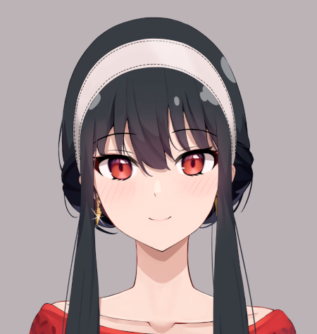
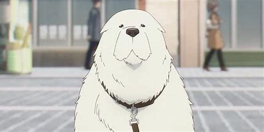
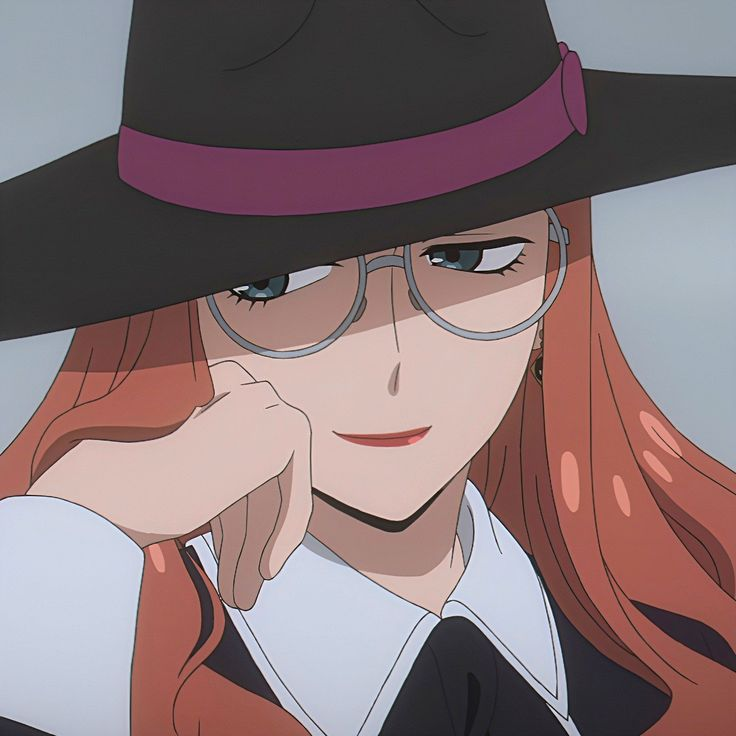
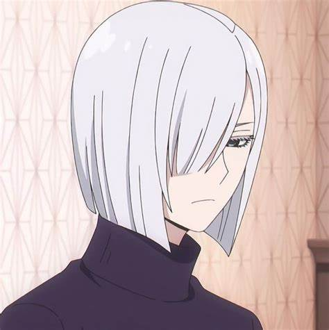

Anya Forger
Solitária e órfã, Anya morava em um orfanato. Ela é paranormal, podendo ler mentes. Sua vida muda quando Loid Forger a adota para a Operação Strix. Anya rapidamente se apega a ele e a Yor, usando seu poder para tentar (e muitas vezes complicar) a missão de manter a paz mundial. Waku Waku!

Yor Briar (Rosa Selvagem)
Yor é uma jovem discreta que trabalha como funcionária pública, mas secretamente é uma assassina altamente habilidosa conhecida como "Rosa Selvagem". Ela se casa com Loid Forger para manter seu disfarce social, mas desenvolve uma relação protetora e afetuosa com Anya e Loid, mesmo sendo desastrada nas tarefas domésticas.
Loid Forger (Twilight)
Loid é um espião de elite, o melhor agente da WISE, conhecido pelo codinome "Twilight". Ele assume a missão de criar uma família falsa para a Operação Strix, adotando Anya e se casando com Yor. Embora a princípio seja puramente profissional, Loid, com seu perfeccionismo e foco na missão, lentamente começa a desenvolver laços emocionais genuínos com sua nova família.

Bond Forger
Adotado pelos Forger após ele (e Anya) salvarem Loid de um atentado, Bond é um cão resgatado de um experimento militar (Projeto Apple). Ele possui o poder de precognição, ou seja, pode ver o futuro. Anya consegue ler a mente de Bond, e juntos eles têm salvado o mundo de pequenas e grandes enrascadas.
Becky Blackbell
Aluna do Colégio Eden, na mesma turma de Anya e Damian. Ela é filha de um importante CEO e inicialmente vê Anya com desdém, mas após a garota "enfrentar" Damian Desmond, Becky se torna sua amiga inseparável. Ela é apaixonada por dramas de espionagem e nutre uma grande admiração (e ciúmes) por Loid.
Damian Desmond
Filho de Donovan Desmond, o alvo da Operação Strix. Damian é um aluno do Colégio Eden, colega de Anya. Inicialmente arrogante e hostil com Anya, ele se sente constantemente confuso e envergonhado por ela, mas secretamente nutre uma queda pela garota, embora se recuse a admitir.

Sylvia Sherwood (Handler)
Sylvia é a principal supervisora de Twilight na WISE e uma especialista em disfarce e articulação. Conhecida como "Handler" (A Manipuladora), ela é implacável em suas ordens, mas guarda cicatrizes profundas da guerra. Ela é a única que consegue manter o agente Twilight na linha.
Yuri Briar
O irmão mais novo de Yor, obcecado por sua irmã. Ele "trabalha" no Ministério das Relações Exteriores, mas sua fachada esconde sua verdadeira identidade: ele é um membro de alto escalão do Serviço de Segurança do Estado (SSS), o inimigo de Twilight. Ele nutre um ódio profundo por Loid Forger (o "marido" de sua irmã).

Fiona Frost (Nightfall)
Agente da WISE, parceira de Twilight em seu trabalho no hospital psiquiátrico. Conhecida como "Nightfall", ela foi treinada pelo próprio Twilight e é mestre em não demonstrar emoções. No entanto, ela esconde um profundo amor unilateral por Twilight e vê Yor como uma rival inepta, tentando roubar o lugar de esposa de Loid Forger.

Donovan Desmond
O principal alvo da Operação Strix e de Twilight. Donovan é o presidente do Partido da Unidade Nacional de Ostania e um recluso. Como um homem importante e cauteloso, ele raramente faz aparições públicas, tornando a missão de Twilight extremamente difícil. Ele é o pai de Damian e Demetrius Desmond.
Franky Franklin
Informante de Twilight e dono de uma tabacaria, Franky é o principal contato de Loid Forger e o responsável por levantar informações sobre o Colégio Eden e o passado de Yor e Anya. Ele é um agente não oficial gentil e companheiro, mas frequentemente lembra Loid da regra de nunca se apegar aos seus disfarces.

Henry Henderson
Professor de história, chefe do Dormitório 3 (Cecile Hall) e uma das principais figuras do Colégio Eden. Henry é nitidamente obcecado por **ELEGÂNCIA** e essa é uma de suas principais exigências para os alunos. Apesar da rigidez, ele é um homem íntegro e um juiz justo, prezando pelo verdadeiro mérito.